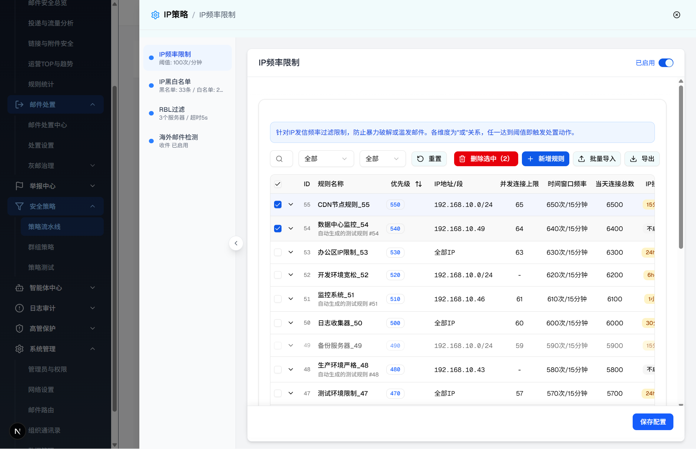
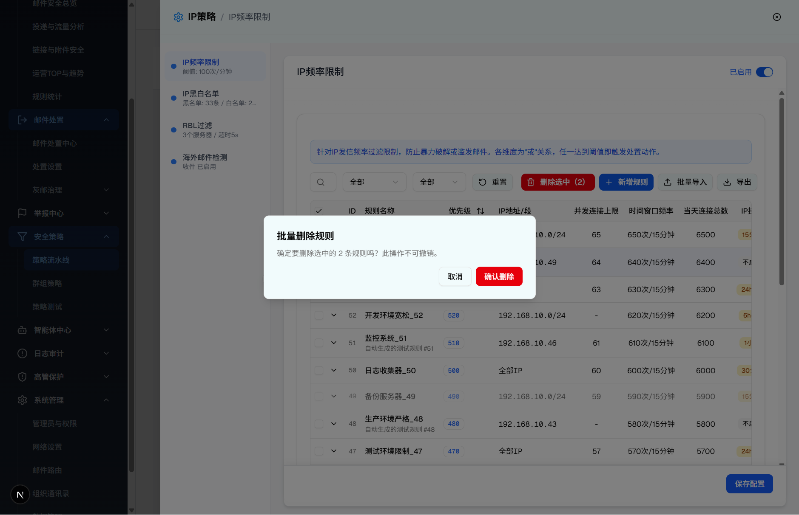

| 所属组件 | 2.3 IP频率限制规则列表模块 |
| 主文件 | index.html |
| 层级编号 | 层级 5 / 8 |
| 触发路径 | 层级0 规则列表 -> 勾选 1 行或多行（出现「删除选中（N）」按钮）-> 点击「删除选中（N）」-> 弹出批量删除确认 AlertDialog |
| demo 组件 | components/ip-frequency-limit/ip-frequency-limit-module.tsx（batchDeleteDialogOpen AlertDialog）+ frequency-rule-filters.tsx（删除选中按钮）+ frequency-rule-table.tsx（全选/单选 Checkbox） |
| 浏览器验证 | agent-browser，2026-07-20，视口 1440×1000 |
进入本层级前，需先在表格勾选规则行。勾选行为是 v2 的核心新增逻辑：
| 元素 | 浏览器实际行为 | 规格说明 |
|---|---|---|
| 表头全选 Checkbox | 三态：全选（checked）/ 半选（indeterminate）/ 未选。当前页 20 行均渲染 [role="checkbox"]。 | 跨页保留：点击全选仅追加当前页未选中项到选中集；点击取消仅移除当前页项，不影响其他页已选项。 |
| 行单选 Checkbox | 每行首列一个，点击切换选中；选中行背景高亮 bg-primary/5。 | 切换页码时清空全部选中（handlePageChange）。 |
| 「删除选中（N）」按钮 | 红色 destructive 样式 + Trash2 图标，文案动态显示当前选中数，如「删除选中（2）」；仅在 selectedCount > 0 时渲染，位于「新增规则」按钮之前。 | 点击打开批量删除确认弹窗；selectedIds 为空时按钮不渲染，点击无效。 |

🖥 可交互：「取消」关闭弹窗（视觉淡出），「确认删除」演示删除后提示并返回主文件。
确定要删除选中的 2 条规则吗？此操作不可撤销。

| 序号 | 元素类型 | 文案/标签 | 默认值 | 交互行为 | 跳转层级 |
|---|---|---|---|---|---|
| 1 | AlertDialogTitle | 批量删除规则 | - | 只读标题 | - |
| 2 | AlertDialogDescription | 确定要删除选中的 N 条规则吗？此操作不可撤销。 | N=selectedIds.length | 只读；N 随勾选数动态变化 | - |
| 3 | Button（取消） | 取消 | - | 关闭弹窗，不删除，保留勾选 | -> 层级0 |
| 4 | Button（确认删除，destructive） | 确认删除 | - | 过滤删除所有 selectedIds 规则、清空选中、关闭弹窗 | -> 层级0 |
| 比对项 | demo 实际 DOM | 提取的 HTML | 是否一致 |
|---|---|---|---|
| 根节点 | div[role="alertdialog"][data-state="open"]，class 含 sm:max-w-lg、居中 translate | 同左，完整 outerHTML | ✅ |
| 子结构 | alert-dialog-header + alert-dialog-footer 两块 | 同左，directChildren=2 | ✅ |
| 标题文案 | 「批量删除规则」 | 「批量删除规则」 | ✅ |
| 描述文案 | 「确定要删除选中的 2 条规则吗？此操作不可撤销。」 | 同左（N=2 为实测勾选数） | ✅ |
| 按钮 | 取消（outline）+ 确认删除（bg-destructive text-white） | 同左，均 type=button | ✅ |
| 截图校验 | 14-batch-delete-dialog.png 可见该弹窗 | 本节引用同一截图 | ✅ |